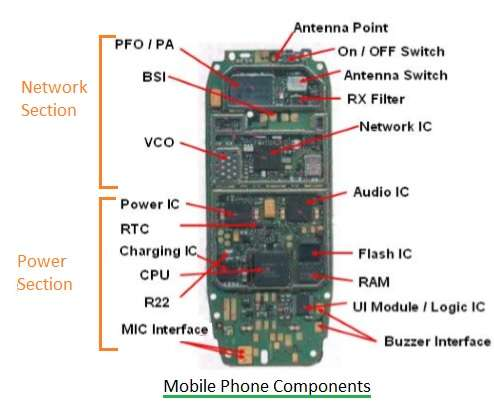

Mobile Hardware
Links:
Mobile hardware includes mobile devices or device components that receive or access the service of mobility. They would range from portable laptops, smartphones, tablet Pc's, Personal Digital Assistants. Mobile Devices These devices will have a receptor medium that is capable of sensing and receiving signals. These devices are configured to operate in full- duplex, whereby they are capable of sending and receiving signals at the same time. They don't have to wait until one device has finished communicating for the other device to initiate communications. Above mentioned devices use an existing and established network to operate on. In most cases, it would be a wireless network.Computer hardware includes the physical parts of a computer, such as the case,[1] central processing unit (CPU), monitor, mouse, keyboard, computer data storage, graphics card, sound card, speakers and motherboard.[2]
By contrast, software is the set of instructions that can be stored and run by hardware. Hardware is so-termed because it is "hard" or rigid with respect to changes, whereas software is "soft" because it is easy to change.
Hardware is typically directed by the software to execute any command or instruction. A combination of hardware and software forms a usable computing system, although other systems exist with only hardware.Diversity in hardware is drying up, which is why companies have started trying to distinguish themselves through the software they ship with each device. The quandary for them is that the thing that's being sold in the store is still the physical device, so they see no choice but to anchor the hopefully differentiated and value-adding user experience — the thing that has a chance to make them unique — to the commoditized product that generally looks and feels like every other. Hence why, no matter how much you want Android on your Lumia 900, switching operating systems is treated like a sinful or illegal activity. It's neither.
It's fine to allow software designers to decide which device or group of devices their operating system will run on, but the converse — tying a phone's hardware to a given OS — is far less defensible. You can port Android to pretty much anything with an electronic pulse these days, so technical justifications for preventing users from tinkering with their smartphones simply do not exist.
